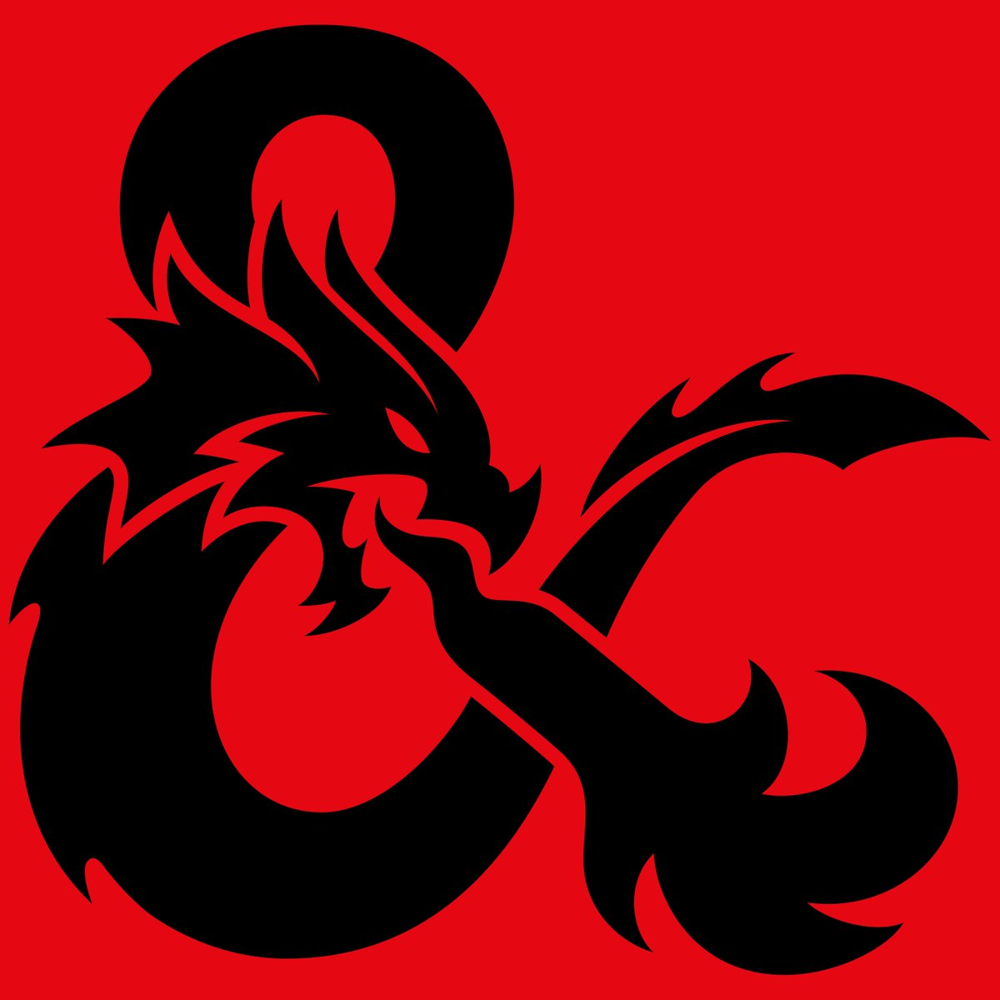

Dungeons & Dragons (D&D) je fantasy hra na hrdinov (RPG), pôvodne navrhnutá Gary Gygaxom a Dave Arnesonom a vydaná spoločnosťou Tactical Studies Rules (TSR). Od roku 1997 hru publikujú Wizards of the Coast. Vydanie D&D sa všeobecne považuje za začiatok moderných hier na hrdinov a role-playing priemyslu.
D&D sa vyvinulo z tradičného wargamingu, kde hráči ovládali celé armády alebo vojenské oddiely. Namiesto nich tu však hráč dostáva do rúk osud jedinej postavy - hrdinu, ktorý sa vydáva na fantastické dobrodružstvá. Dungeon Master (Pán Jaskyne, Dejmajster) slúži ako rozhodca, rozprávač a stvoriteľ, vytvárajúci a ovládajúci svet, v ktorom sa príbeh odohráva. Postavy hráčov obyčajne tvoria družinu, ktorá tento svet preskúmava, komunikuje s jeho obyvateľmi a koná hrdinské skutky. Spoločnými silami riešia problémy, hádanky a konflikty, vrhajú sa do bojov, zbierajú skúsenosti a zhromažďujú bohatstvo. V priebehu hry získavajú skúsenostné body (experience points), vďaka ktorým sa postupne stávajú silnejšími a získavajú nové zručnosti a schopnosti.
Veľký úspech tohoto systému viedol k vytvoreniu mnohých podobných hier, no D&D si napriek konkurencii stále udržiava dominantné postavenie. V roku 1977 sa systém rozdelil na dve vetvy: voľný a upravovateľný Dungeons & Dragons a prísnejší a štruktúrovanejší Advanced Dungeons & Dragons (AD&D). V 1989 bola publikovaná druhá edícia AD&D.2. V roku 2000, s príchodom 3-tej edície, sa z AD&D stal hlavný systém hry a premenoval sa opäť na Dungeons & Dragons. Tieto pravidlá sa tiež stali základom pre d20 Systém, ktorý je voľne prístupný pod Open Game License aj pre iných vydavateľov. D&D edícia 3.5 bola vydaná v Júni 2003. 4-tá edícia bola vydaná v roku 2008 a zatiaľ najnovšie vydanie, 5. edícia D&D, bola vydaná v druhej polovici roku 2014.
Od roku 2006 je D&D najznámejšou a najpredávanejšou hrou na hrdinov. Odhaduje sa, že ju hralo cez 20 miliónov hráčov a zarobila viac ako 1 miliardu dolárov na predaji kníh a herných doplnkov. Hra je totiž podporovaná množstvom predvytvorených dobrodružstiev a celých svetov, určených pre bežné hráčske skupiny.
D&D je držiteľom mnohých ocenení a bol preložený do viacerých jazykov.
